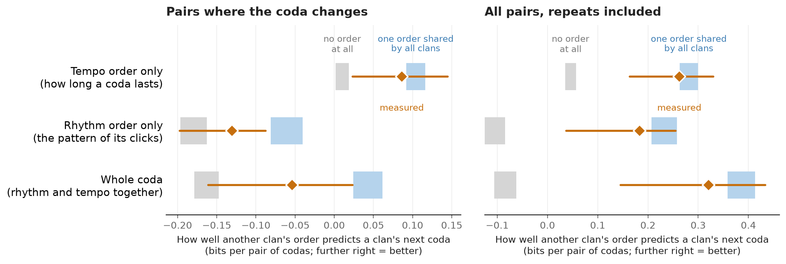

Summary. Sperm whale vocal clans are defined by which codas they use. I ask whether clans also differ in the order of successive codas, and whether a distance between clans' sequence structure could serve as a measure of cultural divergence. Using 23,684 codas from one Caribbean clan (Sharma et al. 2024) and seven Pacific clans (Hersh et al. 2022), each coda is coded as a rhythm class and a duration bin, and a smoothed first-order model is scored on held-out recordings against a frequency-only baseline. (i) The current coda predicts the next beyond what a within-recording shuffle allows, in all eight clans for duration and in six for rhythm when repeats are excluded. (ii) When one clan's ordering is carried onto another clan's own inventory with a factored log-linear model, transfer lies between two reference points, shuffled recordings and a simulated shared ordering: near the shared end for duration (0.78 of the way) and nearer the middle for rhythm (0.40), with wide intervals. (iii) A Procrustes distance between clans' ordering is dominated by estimation noise: two halves of one clan are almost as far apart as two clans. The transfer score appears usable; the distance does not, at these sample sizes. Limitations of the pooled, cross-ocean design are substantial and are listed.
Vocal clans of sperm whales share a repertoire of codas and are sympatric yet socially segregated [1]. Coda usage carries identity at the level of the individual, the social unit and the clan [3], and clans can arise from biased social learning alone [4]. Two recent results frame this note. Hersh et al. [5] showed that between-clan similarity in identity codas decreases as the clans' spatial overlap increases, which they interpret as symbolic marking. Leitão et al. [6] modelled the timing of clicks within codas with variable-length Markov chains and found that this "vocal style" becomes more similar with sympatry for non-identity codas. Both concern which codas are made and how; neither concerns the order of successive codas. Sharma et al. [7] describe codas as combinations of rhythm, tempo, rubato and ornamentation, and Schulz et al. [8] document overlapping and matching of codas between whales, which any analysis of succession must keep in mind; general cautions for acoustic sequence analysis are reviewed in [2]. Coda exchanges were described quantitatively off the Galápagos by Weilgart and Whitehead [9].
I began from a hypothesis that turns out to sit awkwardly with [5]: that clans' coda order drifts apart neutrally, so that a distance between two clans' sequence structure might act as a proxy for divergence. This note reports what the available public data can and cannot say about that. It makes three contributions: a transfer score that separates coda order from coda inventory; reference points that give the score a scale; and a negative result on the distance.
Caribbean data are Dataset 2 of [7]: codas of the EC1 clan off Dominica recorded with animal-borne tags, with onset times and speaker identities for 11 whales. Pacific data are the coda table of [5]: seven clans recorded from boats, without speaker identity or timestamps; the sampling unit is the "repertoire". I refer to both units as recordings. Codas with more than ten clicks are excluded.
| Clan | Ocean | Codas | Recordings | Pairs | Changes | Repeats | Coda types used |
|---|---|---|---|---|---|---|---|
| EC1 (Eastern Caribbean 1) | Caribbean | 3,673 | 217 | 3,456 | 1,609 | 53% | 61 |
| REG (Regular) | Pacific | 7,572 | 45 | 7,348 | 4,177 | 43% | 58 |
| SH (Short) | Pacific | 4,318 | 40 | 4,101 | 2,732 | 33% | 78 |
| FP (Four-Plus) | Pacific | 1,867 | 17 | 1,834 | 977 | 47% | 60 |
| PALI (Palindrome) | Pacific | 1,844 | 12 | 1,791 | 1,286 | 28% | 69 |
| PO (Plus-One) | Pacific | 1,933 | 14 | 1,795 | 1,339 | 25% | 43 |
| RI (Rapid Increasing) | Pacific | 1,301 | 15 | 1,220 | 916 | 25% | 60 |
| SI (Slow Increasing) | Pacific | 1,176 | 15 | 1,112 | 766 | 31% | 38 |
Three properties of these data limit everything below. First, speakers are pooled and no limit is placed on the time between successive codas, so "order" includes exchange between whales. Second, the Caribbean recordings are repeated samples of 11 animals, not independent samples of a clan. Third, the two oceans differ in instrument and protocol, so any Caribbean–Pacific contrast is also a contrast of methods.
Coding. Following [7], each coda is assigned a rhythm class (nearest of 18 EC1 templates with the same click count, on normalised inter-click intervals) and a duration ("tempo") bin (five bins with fixed EC1 edges for comparisons between clans; per-clan quintiles for the within-clan sweep). A coda type is the pair. Pacific codas are therefore forced onto Caribbean templates, with no threshold on fit.
Score. The gain is the mean held-out difference in log2 probability of the next coda between a smoothed bigram model (pseudo-count 0.5) and a frequency-only baseline, in bits per pair, with recordings as the unit of cross-validation. "Changes only" scores pairs whose type differs, with both models conditioned on a change.
Order without inventory. Clans share too few coda types for their transition tables to be compared directly: no type has 20 codas in all eight clans. Each clan's transitions are instead held as a four-way table (current rhythm and duration, next rhythm and duration), and a log-linear model is fitted by iterative proportional fitting to its two inventory margins and to the rhythm-to-rhythm and duration-to-duration margins. Adding the two cross margins does not raise held-out gain (Table 3), so they are left out. To predict clan B with clan A's ordering, A's fitted table is rescaled to B's inventory margins, which keeps A's odds ratios between current and next coda and takes every frequency from B. The baseline is the table with B's margins and no association. A third of each clan's recordings is held out, 15 times.
Reference points. A table estimated from limited data is partly noise, and noise carried to another clan costs bits, so zero is not the reference for transfer. Two are constructed. No order: the codas of each recording are shuffled among its positions, preserving each recording's composition. One shared order: a model fitted to all clans pooled supplies a common ordering; each recording is redrawn from it after rescaling to that recording's own counts, with the ordering's strength tuned so that simulated own gain equals the observed mean. Each reference is run 40 times through the same pipeline. Intervals for observed values are from 200 bootstrap resamples of the held-out recordings.
Distance. Each clan's fitted table is rescaled to one pooled inventory; standardised residuals from independence are embedded in five dimensions by singular value decomposition, and embeddings are compared by orthogonal Procrustes distance. Association with lost predictability is tested with exact Mantel tests over all 40,320 relabellings of eight clans, bearing in mind the known weaknesses of that test [10].
4.1 The current coda predicts the next, beyond recording composition. Over all pairs, gains are 0.15 to 0.86 bits for duration and 0.07 to 0.78 for rhythm across clans. On changes only they are 0.03 to 0.64 and −0.03 to 0.28. Shuffling within recordings leaves a mean of 0.12 bits for duration on all pairs, about a third of the observed mean, so part of the apparent gain reflects which codas a recording contains. Observed gains exceed the 97.5th percentile of 200 shuffles in all eight clans for duration under both scorings, in all eight for rhythm on all pairs, and in six of eight for rhythm on changes (not FP or PO).

| Ordering carried over | Own clan | No order | Observed (95% interval) | One shared order | Position |
|---|---|---|---|---|---|
| Duration to duration | +0.17 | +0.00 to +0.02 | +0.09 (+0.02 to +0.14) | +0.09 to +0.12 | 0.78 |
| Rhythm to rhythm | +0.10 | −0.20 to −0.16 | −0.13 (−0.20 to −0.09) | −0.08 to −0.04 | 0.40 |
| Both (whole coda) | +0.22 | −0.18 to −0.15 | −0.05 (−0.16 to +0.02) | +0.02 to +0.06 | 0.53 |
4.2 Clans share part of their ordering. In every row of Table 2 the observed transfer is above all 40 shuffled runs and below all 40 shared-order simulations (Figure 1). Another clan's ordering therefore carries information, and less than a common ordering would. Duration ordering is close to shared; rhythm ordering less so. The intervals are wide: for the whole coda the interval nearly reaches both reference ranges, so the positions are rough. With repeats included, positions are 0.93, 0.85 and 0.86, as expected if the habit of repeating a coda is common to all clans. The shared duration ordering may be largely gradual change in coda length: 48% to 81% of duration changes are a step to the neighbouring bin, above the frequency-only expectation in every clan (cf. rubato in [7]).
| Model | Duration only | Rhythm only | Both | Both + cross terms | Unfactored coda-type bigram |
|---|---|---|---|---|---|
| Gain (bits per pair) | +0.17 | +0.10 | +0.22 | +0.21 | −0.42 |
4.3 The distance is dominated by noise. Procrustes distance between clans' ordering is 0.83 to 1.06 (mean 0.94). Between two random halves of one clan's recordings it is 0.66 to 1.02 (mean 0.85). Its correlation with lost predictability on changes is ρ = +0.21 (p = 0.34). Given the noise floor this is uninformative, not evidence against divergence. An earlier version of the distance, computed without removing inventory, correlated with lost predictability at ρ = +0.47 (p = 0.007), but that association vanished once inventory divergence was partialled out (ρ = −0.06).
As a proxy for genetic divergence, probably not. Clans are sympatric and males mate across them, and mitochondrial structure, though associated with clan, does not explain dialect differences [11]. As a neutral clock of cultural divergence the premise is also doubtful, since coda usage shows marking where clans overlap [5] and convergence of style in sympatry [6]; a trait under such pressures need not accumulate difference with separation.
The transfer score may still be useful as a descriptive measure of how much sequential structure two groups share, because it has a scale (the two reference points) and an interval. The question it could address with existing data is the one posed by [5] and [6]: among the Pacific clans, does shared ordering rise or fall with spatial overlap, and does the answer differ for identity and non-identity codas? In the Caribbean, where individuals and units are known, the same score could be asked of social units against association or kinship. I would be grateful for a view on whether either is worth doing, and on what I have misjudged.